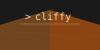

cliffy¶

Describe a command-line tool in YAML. Get a real Python CLI.
cliffy reads a manifest that lists your commands, their parameters and the code each one runs, and
generates a Typer application from it. Command bodies are plain Python,
and any line that starts with $ runs as a shell command, so a manifest can replace a folder of
one-off scripts with a single CLI that has help text, typed arguments and subcommands.
A CLI in 60 seconds¶
1. Install cliffy (Python 3.11 to 3.15):
2. Write a manifest and save it as hello.yaml:
hello.yaml
name: hello
version: 0.1.0
help: Hello world!
commands:
shell: $ echo "hello from shell"
python: print("hello from python")
greet:
help: Greet someone by name
params:
- name: str!
- --shout|-s: bool = False
run: |
message = f"Hello, {name}!"
print(message.upper() if shout else message)
tests:
- shell: assert result.exit_code == 0
- python: assert result.output == "hello from python\n"
- greet Ada: assert result.output == "Hello, Ada!\n"
- greet Ada --shout: assert "HELLO, ADA!" in result.output
3. Load it. cliffy generates the CLI and puts a hello command into your Python environment:
4. Use it like any other command:
$ hello shell
hello from shell
$ hello greet Ada --shout
HELLO, ADA!
$ hello --help
Usage: hello [OPTIONS] COMMAND [ARGS]...
Hello world!
╭─ Options ──────────────────────────────────────────────────────────────────╮
│ --version │
│ --install-completion Install completion for the current shell. │
│ --show-completion Show completion for the current shell, to │
│ copy it or customize the installation. │
│ --help -h Show this message and exit. │
╰────────────────────────────────────────────────────────────────────────────╯
╭─ Commands ─────────────────────────────────────────────────────────────────╮
│ shell │
│ python │
│ greet Greet someone by name │
╰────────────────────────────────────────────────────────────────────────────╯
The tests section at the bottom of the manifest is optional. cli test hello.yaml runs it.
What you get¶
- Python and shell in one place. Run scripts are Python; lines starting with
$becomesubprocesscalls. See Shell commands. - Typed parameters with a short syntax.
name: str!is a required argument and--count|-c: int = 1is an option. See Params and types. - Groups, aliases and templates.
db.createnests a command,delete|rmadds an alias and command templates share params between commands. See Commands, groups and aliases. - A fast edit loop.
cli devreloads the CLI every time you save the manifest. See Hot-reload dev loop. - Tests next to the commands.
cli testruns the assertions you keep in the manifest. See Testing manifests. - One file to ship.
cli buildpacks the CLI and its dependencies into a single executable zipapp, a single Python script or a native executable. See Building executables.
How it works¶
- cliffy renders the manifest with Jinja2, parses the YAML and validates it against the manifest schema.
- It generates one Python module.
cli renderprints that module, so nothing about the result is hidden. cli loadinstalls the module as a command,cli runexecutes it once andcli buildpackages it.
Where to go next¶
| If you want to | Read |
|---|---|
| Install cliffy and its extras | Installation |
| Build a complete CLI step by step | Quickstart |
| Look up a manifest key | Manifest reference |
Look up a cli command or flag |
CLI reference |
| Copy from working manifests | Examples gallery |
| Upgrade from an older release | Migration notes |